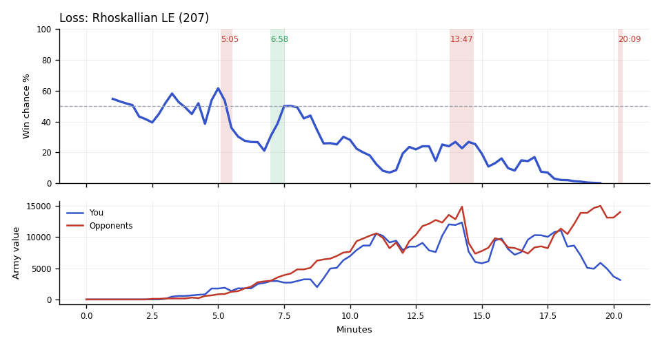

Loss. You lost because you entered the fight 1.6x behind in army, a gap built in earlier fights.
Why
12:56–14:41: Aeronautik and Ender killed Scallop's Vikings and 5 of TakeTheTip's Ultralisks, dropping both armies to lows.
17:39–20:20: Unseen, they had 29 more workers. They out-built you two in army during the fight.
18:25–18:47: Aeronautik's Ghosts, Marines and Marauders killed TakeTheTip's Ultralisks and Zerglings, leaving TakeTheTip's army at about 1,800.
Try next game
TakeTheTip: Before counter-attacking an enemy base, find Scallop's army on your minimap. If it isn't within a screen of yours, pull back to your own bases.
Scallop: Tip omitted.

Written by claude-sonnet-5-5 from the replay fact sheet.
Loss. The game turned at 13:47 when you lost a fight in the middle of the map (10,100 lost, 8,700 killed). The biggest fight came at 18:22–19:54 (14,000 lost, 8,750 killed).
Team MMR 3683 vs 3736 against Aeronautik (Terran), Ender (Protoss). Starting win chance 55%.
Try next game
You went in with 1,850 of army against 875 and still lost the trade. Your army died mostly to Photon Cannons, Siege Tanks and Marines.
You went in with 12,050 of army against 13,575 and still lost the trade. Most of your army died to Ghosts.
You were defending at your bases with 3,925 of army against 14,000; bring both armies home together earlier. Most of your army died to Marines. TakeTheTip: Banelings punish clumped Marines.
Turning points
5:05–5:32: you lost a fight in the middle of the map (775 lost, 0 killed). Win chance 62% to 28%.
Fighting: you lost 775 of army in the middle of the map and killed 0 of theirs. Going in, your armies were worth 1,850 against their 875.
Your losses: 5 Banelings, 8 Zerglings, 2 Reapers; killed mostly by Photon Cannons (5 kills), Siege Tanks (4).
In your earlier games, when you were 525+ behind on army traded by 6:00, you won 17% (24 games) vs 49% otherwise (184 games).
What moved the win chance: army -27%, tech -3%, economy -3%
Try: You went in with 1,850 of army against 875 and still lost the trade. Your army died mostly to Photon Cannons, Siege Tanks and Marines.
6:58–7:31: you killed 19 enemy workers (19 of Ender's). Win chance 21% to 49%.
You killed 19 enemy workers (19 of them Ender's), with Banshees (19 kills).
Fighting: you lost 750 of army at their bases and killed 50 of theirs. Going in, your armies were worth 2,950 against their 3,000.
Your losses: 3 Banshees; killed mostly by Tempests (2 kills), Marines (1).
Their losses: 1 Marine.
In your earlier games, when you had killed 20+ enemy workers by 8:00, you won 69% (51 games) vs 37% otherwise (138 games).
What moved the win chance: economy +30%, army -4%, tech +2%
13:47–14:41: you lost a fight in the middle of the map (10,100 lost, 8,700 killed). Win chance 24% to 19%.
Fighting: you lost 9,900 of army in the middle of the map and killed 8,700 of theirs. Going in, your armies were worth 12,050 against their 13,575.
Your losses: 14 Vikings, 5 Ultralisks, 8 Corruptors, 5 Siege Tanks; killed mostly by Ghosts (36 kills), Marines (27).
Their losses: 12 Ghosts, 7 Tempests, 4 Medivacs, 1 Mothership.
In your earlier games, when you were 2,725+ behind on army traded by 15:00, you won 33% (24 games) vs 55% otherwise (82 games).
What moved the win chance: economy -7%, tech +4%, army -2%
Try: You went in with 12,050 of army against 13,575 and still lost the trade. Most of your army died to Ghosts.
20:09–20:20: you lost a fight at your bases (1,375 lost, 125 killed), including 4 SCVs of Scallop's. Win chance 0% before it; the game ended right after.
Scallop lost 4 SCVs between 20:11 and 20:12, to Marines (2 kills), Ghosts (1), Marauders (1).
TakeTheTip lost 3 Drones, to Ghosts (2 kills), Marauders (1).
Fighting: you lost 1,025 of army at your bases and killed 125 of theirs. Going in, your armies were worth 3,925 against their 14,000.
Your losses: 18 Zerglings, 4 Banelings, 1 Siege Tank; killed mostly by Marines (15 kills), Ghosts (6).
Their losses: 1 Marauder.
Try: You were defending at your bases with 3,925 of army against 14,000; bring both armies home together earlier. Most of your army died to Marines. TakeTheTip: Banelings punish clumped Marines.
Across the whole game
Enemy Tempests (they made 46) destroyed 21,200 of your value (28 Corruptors, 24 Vikings, 18 Drones). Counters built after they first struck at 7:14: Scallop made 53 Vikings; TakeTheTip made 40 Corruptors.
TakeTheTip had 5,053 unspent at 12:30.
TakeTheTip lost 39 Corruptors (9,750) over the game, mostly to Tempests (28), Ghosts (8).
Scallop lost 48 Vikings (9,600) over the game, mostly to Tempests (24), Marines (12).
Scallop had 2,386 unspent at 8:30.
Engine debrief-v3-0.5. Losses count only units killed by an enemy. Win chance comes from a model trained on your earlier games.
Earlier replay bookmarks
Earlier moments to revisit, considering both teammates. Each row groups nearby losses. Engine and chart windows may include other simultaneous losses. Values are minerals + gas. These bookmarks do not grade the decisions.
Local losses: Scallop lost 2 Reapers (200); TakeTheTip lost 5 Banelings, 8 Zerglings (575); duo total 775; opponents lost 0
Local losses: Scallop lost 3 Banshees (750); TakeTheTip lost 1 Overlord (100); duo total 850; opponents lost 19 Probes, 1 Marine (1,000)
Local losses: TakeTheTip lost 1 Hatchery, 1 Queen, +1 others (575); opponents lost 0
Replay map
◎ Historical player start · ◇ Resource cluster · ■ Completed grounded hall · □ Unfinished hall · ✕ Recorded hall ending Dashed rings show recorded events during the selected interval, not simultaneous live state. Symbols and player labels accompany colors.
Hall state
Unplaced halls
Recorded events and source evidenceExact map, registration and resource-site sources
Positive resource-site occupancy is recorded hall presence. Mining, vision, routes, local army availability and map control are unknown. The MMR-conditioned model estimate is unchanged. This panel cannot establish what caused a probability drop.
Older V2 evidence cards
Evidence-first cards are generated independently from the predictive model. Each card separates replay evidence, interpretation, past-only comparison, and an adjustment to test.
Abstained
No supported V2 insight
No supported window
Interpretation
No deterministic temporal pattern met the evidence and persistence checks for an actionable card.
Adjustment to test
No adjustment supported.
Confidence: AbstainedVisibility: replay_state
Evidence chain and comparison
Evidence
No qualifying factual evidence was retained.
Past-only comparison
No past-only comparison was used because no qualifying pattern was detected. Support: 0. Comparable replay IDs: None retained.
Provenance
No additional provenance was retained.
No qualifying deterministic V2 pattern was detected in the available replay evidence.
P(win) is an MMR-conditioned model estimate. Economy and Army Position compare the duo to historical positions at similar game times; they are not model-contribution lanes.
Raw State Comparisons
Observed tracker values, not race-normalized scores. Duo and opponent totals are shown alongside TakeTheTip and Scallop so the normalized lanes above can be checked against the underlying army, economy and bank quantities.
Observed Combat Outcomes
Positive bars favor the duo; negative bars favor the opponents. Each bar summarizes the preceding 15 seconds at a sampled boundary; selected-window summaries exclude future events. These observations do not prove the correct alternative decision.
Factual Replay Timeline
These milestones are replay facts synchronized to the selected window. They are context, not claims about what caused the result.